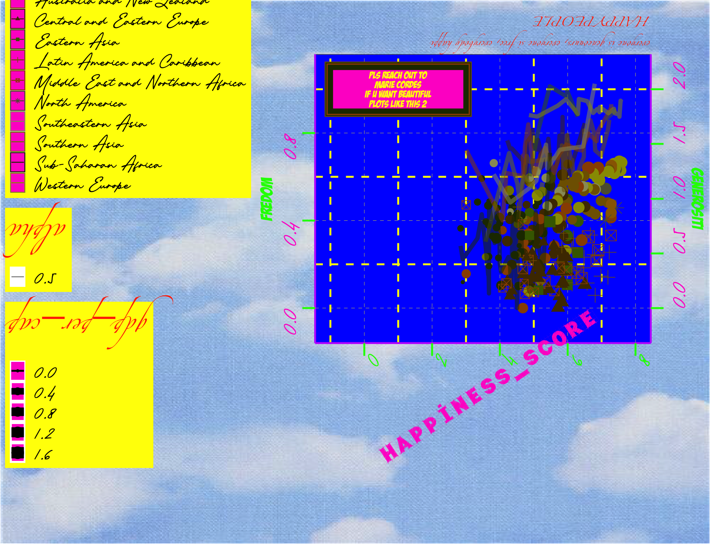

Wort visualisation ever!!!

Creating the worst possible visualisation
# load data from csv
df <- read_csv(here::here("data", "world_happiness_2015.csv"))
# rename columns
names(df)[1] <- "country"
names(df)[2] <- "region"
names(df)[3] <- "happiness_rank"
names(df)[4] <- "happiness_score"
names(df)[5] <- "std_error"
names(df)[6] <- "gdp_per_cap"
names(df)[7] <- "family"
names(df)[8] <- "life_exp"
names(df)[9] <- "freedom"
names(df)[10] <- "govnm_corruption"
names(df)[11] <- "generosity"
names(df)[12] <- "dystopia_residual"# define colours vector
colors <- c('#996600', '#4d3300', '#446600', '#806000', '#994d00', '#5c5c3d','#999966','#808000','#223300','#999900')
# load background picture
sky <- png::readPNG(here::here("data", "images", "sky.png"))
# define credits
label <- "pls reach out to\nMARIE CORDES\nif u want beautiful\nplots like this 2"# create plot
p <- ggplot(df,
aes(x = happiness_score,
color = region,
size = gdp_per_cap)) +
# first y axis with data on freedom
geom_point(aes(y=freedom)) +
# set color scale to the one defined before
scale_color_manual(values=colors)+
# theme_bw()+
# add theme elements
theme(
# define general text size and font
text = element_text(size=16, family="Piedmont"),
# design titles
title = element_text(angle = 180,
color = "#ff3300",
size = 8,
family = "Zapfino"),
# design axes titles
axis.title.x = element_text(angle = 34,
color = "#ff33cc",
size=25,
family = "Typo Draft Demo"),
axis.title.y = element_text(angle = 90,
color = "#00ff00",
size=18,
family = "BadaBoom BB"),
# design axes text
axis.text.x = element_text(angle = 77,
color="#00ff00",
size=15),
axis.text.y = element_text(angle = 90,
color="#ff33cc",
size=15),
# design axes lines and ticks
axis.line = element_line(size = 1,
colour = "#bf00ff",
linetype = 1),
axis.ticks = element_line(size = 1,
color = "#00ff00") ,
axis.ticks.length = unit(.5, "cm"),
# design grid lines
panel.grid.major = element_line(size = 0.15,
linetype = 2,
colour = "#ffff00"),
panel.grid.minor = element_line(size = 1,
linetype = 2,
colour = "#ffff00"),
# design plot and panel background
plot.background = element_rect(fill = NA),
panel.background = element_rect(fill = "#0000ff"),
# design legend
legend.position = "left",
legend.title = element_text(size = 20),
legend.background = element_rect(fill = "#ffff00")
)+
# add credits
# add and design background rectangle
geom_rect(aes(xmin = -1, xmax = 3,
ymin = 0.9, ymax = 1.1),
fill = "#ff33cc") +
# add and design text
geom_text(
data = data.frame(
x = 1, y = 1,
label = label),
aes(x = x, y = y,
label = label),
colour="#ffff00",
family="BadaBoom BB",
hjust = 0.5,
lineheight = .8,
inherit.aes = FALSE
)+
# add second y axis with data on generosity
geom_point(aes(y = generosity,
shape = region))+
# add regression lines with data on life_exp
geom_line(aes(y = life_exp,
size = 0.1,
alpha = 0.5))+
# add axes limits
scale_x_continuous(limits = c(-1,8))+
scale_y_continuous(limits = c(-0.1,1.1),
# add left y axis name
name = "FREDOM",
# add second axis + name
sec.axis = sec_axis(~.*2, name = "generositi")) +
# add title and subtitle
labs(title = "HAPPY PEOPLE",
subtitle = "everyone is geneouurs, everyone si free, everybody happi")+
NULLNext we add a pretty background picture and, then, want to have a look at the final plot:
Unfortunately, simply printing it, scales the picture very weirdly (probably even worse (=better) though)…
# add background image
world_happiness_2015 <- grid.draw(gList(rasterGrob(sky,
width = unit(1,"npc"),
height = unit(1,"npc")),
ggplotGrob(p))) 
# save plot
world_happiness_2015 +
ggsave('worst_viz.png', height=28, width = 35, units = 'cm')## integer(0)…therefore, we show it here, in all its glory!
